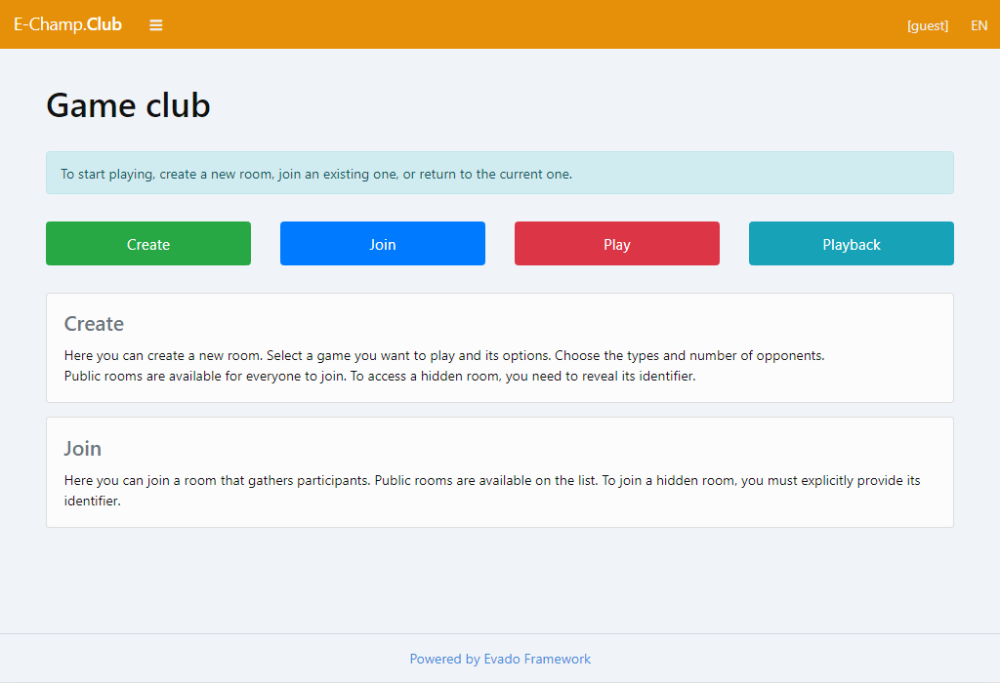

Представление
E-Champ - это серверная платформа для браузерных онлайн игр. Приложение написано на современном JavaScript, имеет открытый исходный код и использует производительные Node.js и MongoDB сервера. Построено на базе декларативного фреймворка Evado.
Живая демонстрация Готовое приложение
В E-Champ игры подключаются как независимые npm-модули. Каждая игра реализует серверную и интерфейсную части в стандарте платформы и поддерживает не только удаленных игроков, но и ботов. E-Champ позволяет множественные реализации поведений компьютерных соперников, которые также подключаются как отдельные модули. Все это позволяет легко настраивать и добавлять новые игры и новых ботов.
Готовое для запуска E-Champ приложение доступно на GitHub.